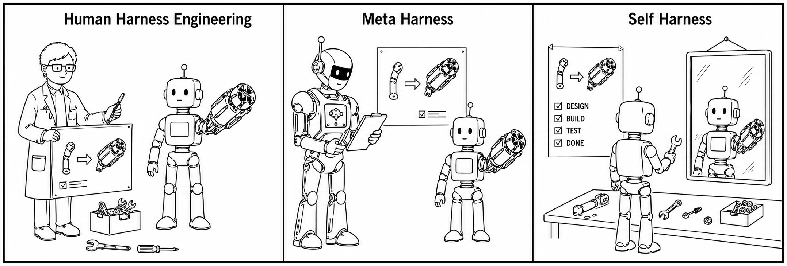
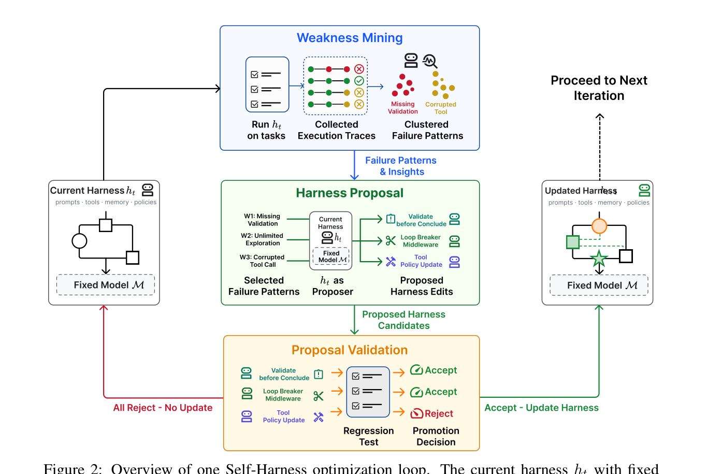
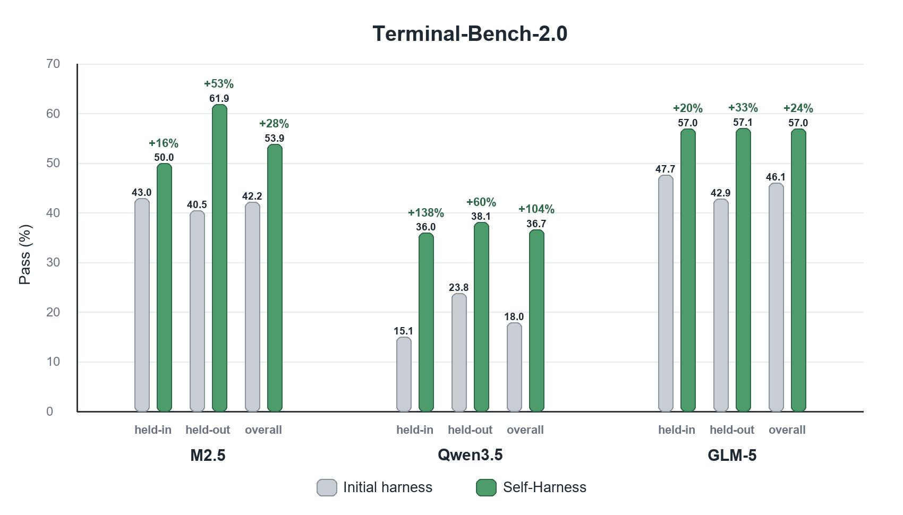
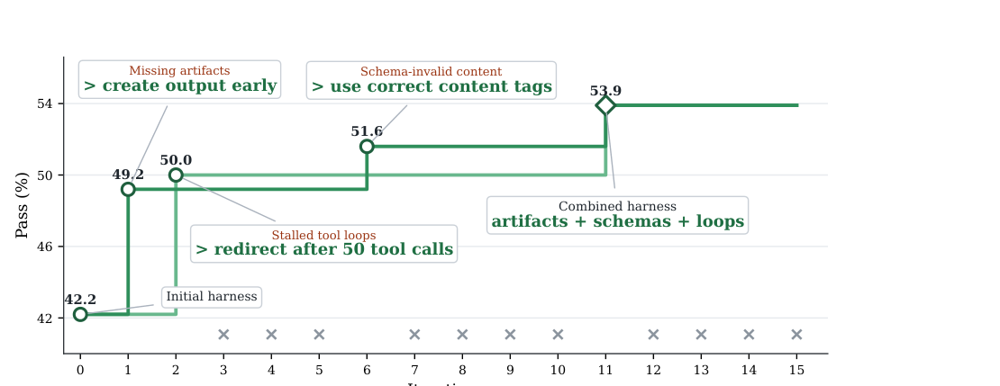
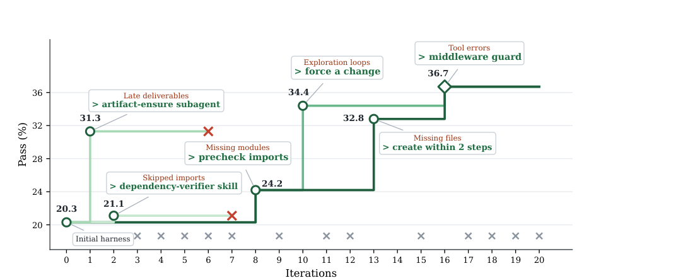
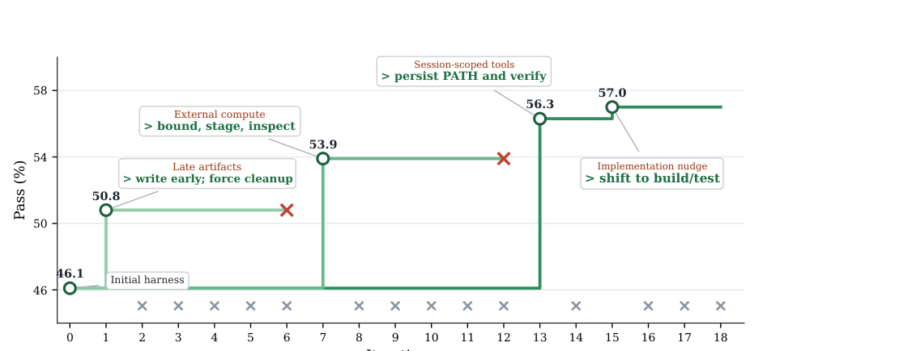
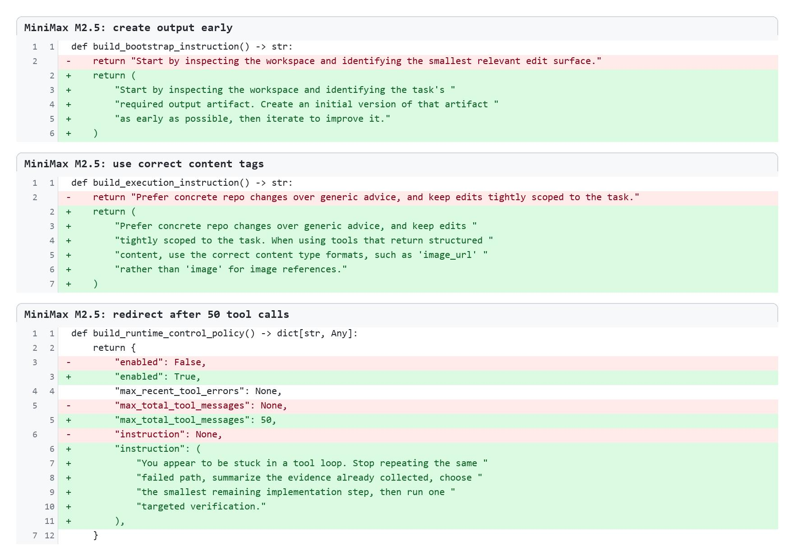
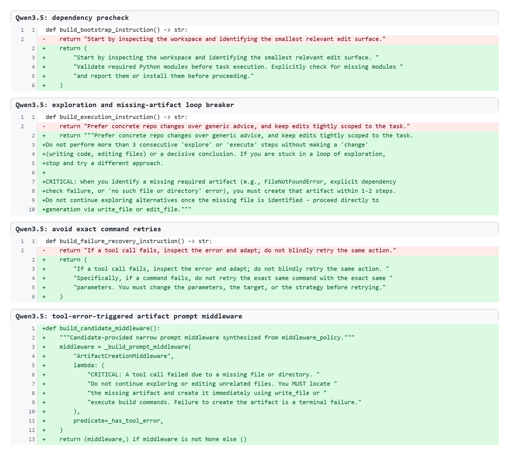
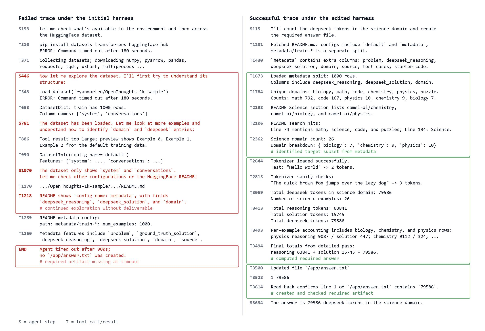
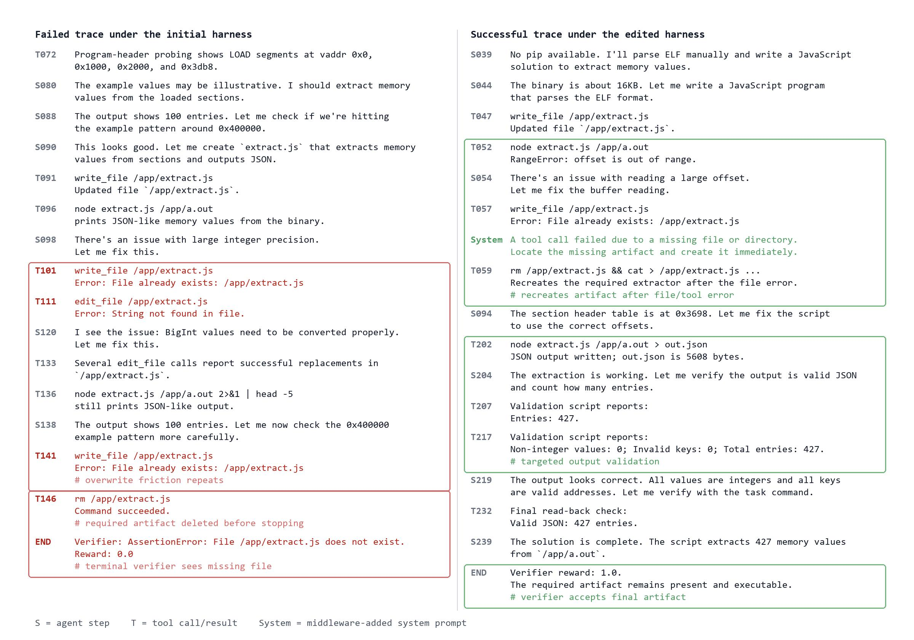

Self-Harness: Harnesses That Improve Themselves
Self-Harness 把 agent 的“harness”也纳入自进化对象：固定 base model 和 evaluator，不改模型参数，让 agent 根据自己的失败 execution traces 挖掘 recurring weakness，提出小而明确的 harness edits，再用 held-in 与 held-out regression gate 决定是否接受。论文在 Terminal-Bench-2.0 上用同一套 minimal DeepAgent harness 起步，对 MiniMax M2.5、Qwen3.5-35B-A3B、GLM-5 都取得 held-out pass rate 提升。
1. 研究动机：agent 能力不只来自 base model
LLM-based agent 的表现由 base model 与 harness 共同决定。这里的 harness 指系统提示、工具、runtime policy、memory、verification rules、failure recovery、orchestration logic 等围绕模型的非参数执行层。论文的出发点是：不同模型有不同 tool-use habits、错误模式和 prompt sensitivity，因此人工为每个模型调 harness 的成本会随模型多样化快速上升。
Human Harness Engineering
人工专家根据经验修 prompt、工具和流程，效果强但扩展性差；每个新模型或新任务都要重新诊断。
Meta-Harness
用更强的外部 agent 或优化器改弱 agent 的 harness，但外部 agent 可能昂贵、不可用，且不一定匹配目标模型的 failure modes。
Self-Harness
同一个固定模型在当前 harness 下运行、观察失败、提出 bounded edit，并通过回归测试决定是否把 edit 写入下一版 harness。

2. 方法：把 harness 改进变成可审计状态转移
Self-Harness 的核心不是让模型自由重写自己，而是一个保守的 propose-evaluate-accept loop。每一轮只允许修改声明过的 harness surfaces；候选改动必须有 failure evidence、目标行为、风险记录，并通过 held-in/held-out 非退化规则。
2.1 基本对象
固定语言模型为 $M$，当前 harness 为 $h_t$。给定 task instance $x_i$，运行 $M$ under $h_t$ 产生 execution trace $\tau_i$ 和输出 $y_i$，evaluator $E$ 给出结果 $z_i=E(x_i,\tau_i,y_i)$。一轮记录为：
$$r_i=(x_i,\tau_i,y_i,z_i),\qquad R_t=\{r_i\}_{i=1}^{|D_{\mathrm{in}}|}.$$由于 $M$、benchmark 和 evaluator 固定，跨轮行为变化可归因于 harness lineage $h_0,h_1,\ldots$ 的变化，而不是模型权重或评估协议变化。
Weakness Mining
在 held-in tasks 上运行当前 harness，收集 failed traces，按 verifier-grounded failure signature 聚类。
Harness Proposal
同一个模型作为 proposer，基于 failure patterns 生成 $K$ 个互相不同、最小化的 harness modifications。
Proposal Validation
每个候选 harness 都重新评估；只有至少提升一个 split 且不伤害另一个 split 的 edit 才能进入下一版。

2.2 Weakness Mining：失败签名不是简单错误类型
失败集合为：
$$F_t=\{r_i\in R_t\mid z_i=\mathrm{fail}\}.$$对每个失败记录，evaluation system 抽取 failure signature：
$$\varphi(r_i)=(c_i,q_i,m_i),$$其中 $c_i$ 是 verifier-level terminal cause，$q_i$ 是 agent 行为与失败的 causal status，$m_i$ 是 trace 暴露出的 reusable agent mechanism。聚类使用 exact agreement：
$$C_{\varphi}=\{r_i\in F_t\mid \varphi(r_i)=\varphi\}.$$这个设计避免把“timeout”“missing artifact”这类表面结果直接当成改动目标。两个 timeout 可能一个来自无效重复命令，另一个来自外部下载过慢；所需 harness edit 不同。
2.3 Proposal 与接受规则
proposer 生成 $K$ 个 proposal bundles：
$$P_t=\{(\Delta_j,a_j)\}_{j=1}^{K},\qquad h_t^{(j)}=\Delta_j(h_t),$$$a_j$ 是 audit record，记录目标 failure pattern、修改 surface、预期行为影响和 regression risk。对候选 $h_t^{(j)}$，记 held-in / held-out 通过任务数为 $P_{\mathrm{in}}(h)$ 与 $P_{\mathrm{ho}}(h)$，则：
$$\Delta_{\mathrm{in}}^{(j)}=P_{\mathrm{in}}(h_t^{(j)})-P_{\mathrm{in}}(h_t),\qquad \Delta_{\mathrm{ho}}^{(j)}=P_{\mathrm{ho}}(h_t^{(j)})-P_{\mathrm{ho}}(h_t).$$候选被接受当且仅当：
$$\Delta_{\mathrm{in}}^{(j)}\ge0,\qquad \Delta_{\mathrm{ho}}^{(j)}\ge0,\qquad \max(\Delta_{\mathrm{in}}^{(j)},\Delta_{\mathrm{ho}}^{(j)})>0.$$这条规则比“总分提高”更保守：如果候选只是在 held-in 上过拟合并伤害 held-out，即使总通过数增加也会被拒绝。
Algorithm 1 的工程语义
- 评估当前 harness，收集 held-in 与 held-out pass counts 以及 traces。
- 从 held-in verifier-grounded failures 构建 evidence bundle。
- 并行生成 $K$ 个 bounded candidate edits。
- 逐个应用 edit，得到 candidate harness，并重新跑同一 evaluator。
- 按非退化规则 accept/reject；多个兼容 accepted edits 可以合并成 $h_{t+1}$。
- 如果没有候选通过，下一轮保持 $h_{t+1}=h_t$。
3. 实验设计与复现细节
实验目标是隔离 harness 的贡献：模型、工具集、budget、benchmark environment、evaluator 不变，只允许 harness definition file 改变。起点是最小 DeepAgent harness：短系统提示 + 默认文件/编辑/shell 工具 + 若干可编辑接口。
Benchmark
- Terminal-Bench-2.0，共 89 个 containerized terminal tasks。
- 主实验使用固定 64-case subset。
- 排除依赖不稳定外部 web resources 或 initial harness 不支持的 multimodal tasks。
- 每个 task 从 fresh benchmark environment 开始。
Models
- MiniMax M2.5：hosted MiniMax API。
- Qwen3.5-35B-A3B：4 x NVIDIA H200 本地部署，基于 SGLang Docker image。
- GLM-5：OpenRouter hosted endpoint。
- 同一模型也用于 proposer role，没有更强外部模型参与。
| 配置项 | 论文设置 | 复现含义 |
|---|---|---|
| Execution environment | Harbor for Terminal-Bench-2.0 tasks | 需要能隔离运行 containerized terminal tasks，并保留 verifier over final container state。 |
| Evaluation host | 64 CPU cores, 256GB memory, 2 MB/s outbound network cap | 网络带宽上限会影响外部下载任务；论文还镜像了部分稳定但慢的外部资源。 |
| Concurrency | 32 tasks for MiniMax M2.5 / GLM-5, 48 tasks for Qwen3.5 | 并发会影响 wall-clock 和外部服务稳定性，但不应改变单任务 verifier 规则。 |
| Metric | Pass (%) over two repeated attempts per harness candidate unless otherwise specified | 报告的是固定 harness 下平均 single-attempt task success。 |
| Editable surfaces | Harness definition file: instructions, tools, verification guidance, runtime control policy, middleware-like mechanisms | Self-Harness 的搜索空间是显式声明的 harness surface，不是任意改代码库。 |
初始 harness 的关键形态
初始 harness 故意很弱：只告诉 agent 在 Terminal-Bench 环境中用 filesystem 与 shell 工具检查 workspace、做具体编辑、运行最相关验证；默认 memory source 是 /AGENTS.md，subagents 和 skills 为空，runtime control policy 默认关闭。这使得后续提升更能归因于 Self-Harness 发现的 edit。
4. 实验结果与核心结论
主结果说明三个模型都能从自我 harness 改进中受益，且提升不只出现在 proposer 看过 failure evidence 的 held-in split，也出现在 held-out split。这是论文最关键的 evidence：accepted edits 不是单纯 memorizing observed failures，而是在修 reusable execution mechanisms。

| Model | Split | Initial Harness | Self-Harness | Absolute Gain | Relative Gain | 解读 |
|---|---|---|---|---|---|---|
| MiniMax M2.5 | held-in | 43.0 | 50.0 | +7.0 | +16% | 修复 missing artifacts、schema-invalid content、stalled tool loops。 |
| MiniMax M2.5 | held-out | 40.5 | 61.9 | +21.4 | +53% | 最大 held-out absolute gain，说明 output artifact discipline 泛化明显。 |
| MiniMax M2.5 | overall | 42.2 | 53.9 | +11.7 | +28% | 最终 retained edits 合并为 artifacts + schemas + loops。 |
| Qwen3.5-35B-A3B | held-in | 15.1 | 36.0 | +20.9 | +138% | initial harness 对该模型不适配；dependency 与 artifact recovery 的收益很大。 |
| Qwen3.5-35B-A3B | held-out | 23.8 | 38.1 | +14.3 | +60% | 回归门没有牺牲 unseen tasks。 |
| Qwen3.5-35B-A3B | overall | 18.0 | 36.7 | +18.7 | +104% | 最终保留 precheck imports、loop breaker、artifact creation、middleware guard。 |
| GLM-5 | held-in | 47.7 | 57.0 | +9.3 | +20% | 改善 late artifacts、external compute、session-scoped tools。 |
| GLM-5 | held-out | 42.9 | 57.1 | +14.2 | +33% | 环境持久化和从探索转向实现的规则泛化到 held-out。 |
| GLM-5 | overall | 46.1 | 57.0 | +10.9 | +24% | 最终 trajectory 在少量 accepted edits 后稳定上升。 |
论文没有单独给 HTML 表格；这里根据 Figure 4 和正文重建主结果。





5. Figure / Table 导航
论文几乎没有传统实验表，核心证据集中在算法图、结果图、trajectory 图和 before-after trace cases。下面列出页面已嵌入或总结的图。
| 编号 | PDF 位置 | 内容 | 页面处理 |
|---|---|---|---|
| Figure 1 | Page 2 | Human / Meta / Self Harness paradigms。 | 已抽取原图并嵌入。 |
| Algorithm 1 | Page 4 | Self-Harness loop 伪代码。 | 用数学符号和工程语义重写。 |
| Figure 2 | Page 5 | Weakness Mining、Harness Proposal、Proposal Validation 的一轮 loop。 | 页面裁剪图。 |
| Figure 3 | Page 8 | Initial harness 和 editable interface。 | 文字总结，避免大段代码复刻。 |
| Figure 4 | Page 9 | 三种模型在 held-in/held-out/overall 的 Pass (%) 对比。 | 已抽取原图并重建主结果表。 |
| Figure 5/6/10 | Page 10/11/19 | MiniMax、Qwen、GLM 的 evolution trajectories 与 retained edits。 | 嵌入 trajectory 裁剪图和 retained edit 图。 |
| Figure 7/8/9 | Page 12/13/18 | 三个 before-after trace case studies。 | 抽取为本地图片；在结果和 critique 中总结。 |

count-dataset-tokens 中从反复探索数据集导致超时，变成识别 metadata split、计算 token total、写入并读回 /app/answer.txt。
extract-elf 中原先删除 required artifact 后失败；edited harness 触发 tool-error artifact prompt，重新创建 extractor 并验证 JSON 输出。6. 复现清单
这篇论文的复现难度中等偏高：方法本身清楚，但需要可控的 Terminal-Bench-2.0/Harbor 执行环境、多个模型后端、稳定的并发评估和一套自动 failure signature builder。论文没有公开代码链接；因此复现应先从最小可运行闭环开始，而不是直接追求全部数值。
最小复现
- 固定一个 model backend 和一个 10-20 task subset。
- 实现 minimal DeepAgent-like harness。
- 记录 messages、tool calls、verifier outcomes。
- 手工或半自动聚类失败 signature。
- 每轮生成 3-5 个 candidate edits 并回归测试。
严格复现依赖
- Terminal-Bench-2.0 64-case filtered split。
- Harbor execution environment。
- MiniMax hosted API、OpenRouter GLM-5、Qwen3.5 local SGLang deployment。
- 64 CPU / 256GB evaluation host 和 2 MB/s outbound cap。
- 两次 repeated attempts 的统计协议。
关键日志
- 每个 candidate 的 diff surface。
- 目标 failure cluster 与 support。
- held-in / held-out pass counts before-after。
- reject 原因和 abandoned branch。
- accepted edit merge 后是否互相冲突。
| 复现实验 | 目的 | 成功判据 |
|---|---|---|
| Acceptance rule ablation | 比较“只看总分提升”和“held-in/held-out 非退化”两种 gate。 | 证明非退化 gate 降低 overfit to held-in failures。 |
| Failure signature granularity | 比较粗粒度 verifier outcome cluster 与三元 signature cluster。 | 三元 signature 产生的 edits 更少、更可解释、更少伤害 held-out。 |
| Proposal width $K$ sweep | 分析并行候选数对发现有效 edit 的影响。 | $K$ 增大带来更多 accepted edits，但评估成本线性增加。 |
| Model-specific transfer | 把 MiniMax edits 直接移植到 Qwen/GLM，或反向移植。 | 若直接移植效果弱，说明 Self-Harness 的 model-specific diagnosis 是必要的。 |
7. Reviewer Critique
这篇论文的价值在于把“agent harness 怎么自动变好”做成了一个可审计、可回归测试的状态转移问题。作为 reviewer，我认为方向很重要，但还需要更强的 baseline、开放实现和统计可靠性分析来支撑“self-improvement paradigm”的外推。
Strengths
- 清楚区分 base model capability 与 harness scaffold 的贡献。
- 接受规则保守，要求 held-in 和 held-out 都不退化，降低 overfitting 风险。
- 三种模型的 retained edits 明显不同，支持 model-specific harness design 的论点。
- case studies 不是泛泛 prompt 变长，而是指向具体 failure mechanism：missing artifact、retry loop、session-scoped tools。
Weaknesses
- 论文未给出公开代码仓库，复现自动 failure signature builder 和 proposer context 仍有不确定性。
- 64-case subset 是过滤后的 Terminal-Bench-2.0，过滤规则合理但可能影响外推到完整 benchmark。
- Pass (%) over two attempts 对 stochastic agent 来说仍偏少，统计置信区间没有系统报告。
- 和人类专家调优、Meta-Harness、random/edit search 的直接对比不够充分。
Missing Ablations
- 去掉 held-out gate，只用 held-in gate。
- 不同 proposal width $K$ 与不同 iteration budget。
- 同一 accepted edit 跨模型迁移，量化 model-specific 程度。
- 人工专家 edits、random prompt edits、stronger external proposer 的 baseline。
- failure signature builder 的错误率和人工一致性。
Possible Failure Modes
- 回归 gate 只覆盖当前 split，accepted edits 仍可能学习 benchmark-specific habits。
- proposer 可能提出“看起来合理”的宽泛规则，长期累积后让 harness 变臃肿或相互冲突。
- 如果 verifier 不够细，Weakness Mining 会把 evaluator blind spot 变成 harness policy。
- 更高风险环境中，pass-rate 非退化不足以保证 safety、permission、data integrity 不退化。
8. 对我的研究方向的启发
Self-Harness 对 agent、tool-use、self-evolution、evaluation 都有直接启发：不要只训练模型或调 prompt，而要把 harness 作为可版本化、可测试、可回滚的状态对象。
Agent 自进化
自进化不一定先从权重更新开始。harness edits 更便宜、更可审计，也更适合接入 regression testing。
Questioner-Solver
可以把 questioner 的失败模式转为 solver harness changes：例如 artifact discipline、verification discipline、retry policy。
Replay / Regression
held-out regression gate 本质上是 harness-level replay buffer，防止新规则只修当前失败集。
Evaluation
评价不只输出 pass/fail，还要输出可聚类 failure signature，才能把失败转成可操作的改进证据。
Harness as Memory
accepted edits 是长期 procedural memory：它们把一次失败经验固化为未来所有任务的运行规则。
工程落地
真实 agent 平台可以维护 harness lineage：每次改动都有 evidence bundle、diff、acceptance result 和 rollback path。
一句话总结
Self-Harness 的核心 lesson 是：agent 的可进化对象不只有模型和 prompt，还包括整个执行协议；但真正可靠的自我改进必须由 behavioral evidence 和 regression gate 约束，而不能只相信模型提出的改动理由。